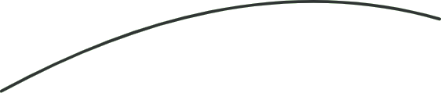
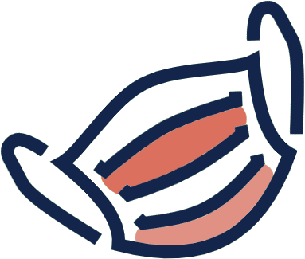

Personalized care, right at home. From understanding your symptoms to remembering your next dose, QueroCura keeps your health story in one trusted place.
QueroCura brings your symptoms, your records and your routine into one place — reading what your body is telling you, remembering what your doctor prescribed, and surfacing it the instant someone needs it.
From a first symptom to an emergency room, we're built to close the gap between what's known about you and what's in reach.
To close the gap between what's known about a patient and what's in reach — putting the right health information in the right hands, at the moment it matters most.
A world where no patient's history is a mystery to the people trying to save them — and where staying on top of your own health is as simple as checking your phone.
QueroCura started with a simple observation: how much time it takes for doctors to even begin treatment, and how much hassle it takes just to retrieve a patient's information before care can start at all. We built QueroCura to close that gap.
Privacy first. Your data is yours — encrypted, and shown only when it needs to be.
Clarity over jargon. Health information should make sense to the person it's about.
Built with clinicians. Not guessed at — shaped by the people who treat patients every day.
Seconds matter. In an emergency, speed isn't a feature — it's the whole point.
Tap a pillar to see what it does.

A project which aims to increase the speed of medical response for a patient who reaches the hospital in an emergency situation.
A detailed summary of the patient's medical information reaches first responders immediately — biometrically verified, nothing to fill out.
See the full breakdownDescribe how you're feeling in your own words. QueroCura maps what you describe against clinical patterns to help narrow down what might be going on — before you ever set foot in a clinic.
Plain-language symptom input — no medical jargon required
Pattern-matched against known clinical presentations
A starting point for the clinical interview that follows
Instead of a static checklist, QueroCura asks the follow-up questions a clinician would — a guided, conversational interview built to increase the certainty of every prediction it makes.
Dynamic follow-ups, not a fixed questionnaire
Each answer narrows down the range of likely explanations
Designed to raise confidence before a prediction is shown
QueroCura reads your reports and tracks your health over time, surfacing insights that a single report on its own wouldn't show — the trend behind the number, not just the number.
Reads uploaded lab and diagnostic reports automatically
Tracks how key markers move across every visit, not just one
Surfaces what's worth a closer look, in plain language
Every report, prescription and record lives in CuraVault — stored securely and analyzed over time, so your history travels with you instead of staying locked in a drawer or one clinic's system.
One secure vault for every report, scan and prescription
Analyzed over time, so trends surface on their own
Built on the same encryption model as Emergency Glass Door
Prescriptions come with timing that's easy to miss. QueroCura reminds you to take the right medicine at the right time, every time — pulled straight from what's already in CuraVault.
Reminders timed to your actual prescription, not guesswork
Works off prescriptions already stored in CuraVault
One less thing to remember during recovery
You might ask, how do we decide what information to display in an emergency?
We don't. Every field is entered by the user's own physician(s), beforehand, during onboarding — the same records CuraVault keeps for you over time.
That gives medical teams the most accurate, required and relevant data for the emergency at hand.
A medical professional scans the patient's fingerprint or iris — no forms, no delay.
The scan is matched against the patient's biometrics linked to their Aadhaar card.
On a successful match, the care team gets emergency data straight from CuraVault.
Everything in CuraVault — emergency records, reports, prescriptions — is linearly homomorphically encrypted and accessible only through biometric verification. Not even we can see our users' data.
QueroCura is early — we haven't onboarded our first hospitals yet. Real reviews from real care teams will show up here as we do. If you'd like to be one of the first, we'd love to hear from you.
Leave your details and we'll reach out the moment QueroCura — and Emergency Glass Door — is ready for real users.
We'll reach out the moment QueroCura is ready for you.
Whichever card you tap, one email opens — addressed to both of us. No picking the "right" inbox.